2022 National 5 Chemistry - Paper 1 questions
Source: Scottish Qualifications Authority (SQA) / Qualifications Scotland. This is a StemInteract HTML companion, not an official HTML edition. Selectable text is supplied alongside original page images. Use the images or original PDF for equations, powers, fractions, vector notation, tables and diagrams; text extraction cannot fully preserve mathematical layout.
Jump to a question
PDF page 1
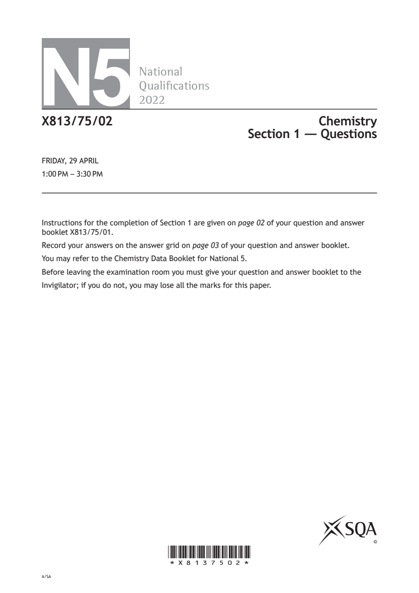
Selectable page text
N5
National
Qualications
2022
X813/75/02 Chemistry
Section 1 — Questions
FRIDAY, 29 APRIL
1:00 PM – 3:30 PM
Instructions for the completion of Section 1 are given on page 02 of your question and answer
booklet X813/75/01.
Record your answers on the answer grid on page 03 of your question and answer booklet.
You may refer to the Chemistry Data Booklet for National 5.
Before leaving the examination room you must give your question and answer booklet to the
Invigilator; if you do not, you may lose all the marks for this paper.
©
*X8137502*
A/SAPDF page 2
Paper 1, Question 1Paper 1, Question 2Paper 1, Question 3Paper 1, Question 4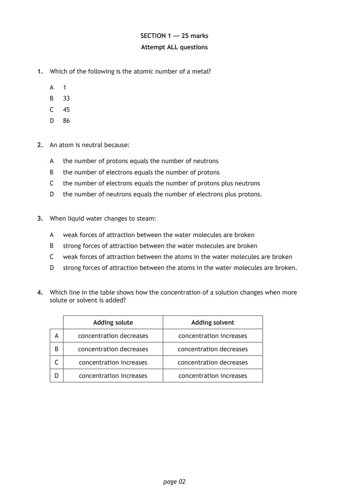
Selectable page text
SECTION 1 — 25 marks
Attempt ALL questions
1. Which of the following is the atomic number of a metal?
A 1
B 33
C 45
D 86
2. An atom is neutral because:
A the number of protons equals the number of neutrons
B the number of electrons equals the number of protons
C the number of electrons equals the number of protons plus neutrons
D the number of neutrons equals the number of electrons plus protons.
3. When liquid water changes to steam:
A weak forces of attraction between the water molecules are broken
B strong forces of attraction between the water molecules are broken
C weak forces of attraction between the atoms in the water molecules are broken
D strong forces of attraction between the atoms in the water molecules are broken.
4. Which line in the table shows how the concentration of a solution changes when more
solute or solvent is added?
Adding solute Adding solvent
A concentration decreases concentration increases
B concentration decreases concentration decreases
C concentration increases concentration decreases
D concentration increases concentration increases
page 02PDF page 3
Paper 1, Question 5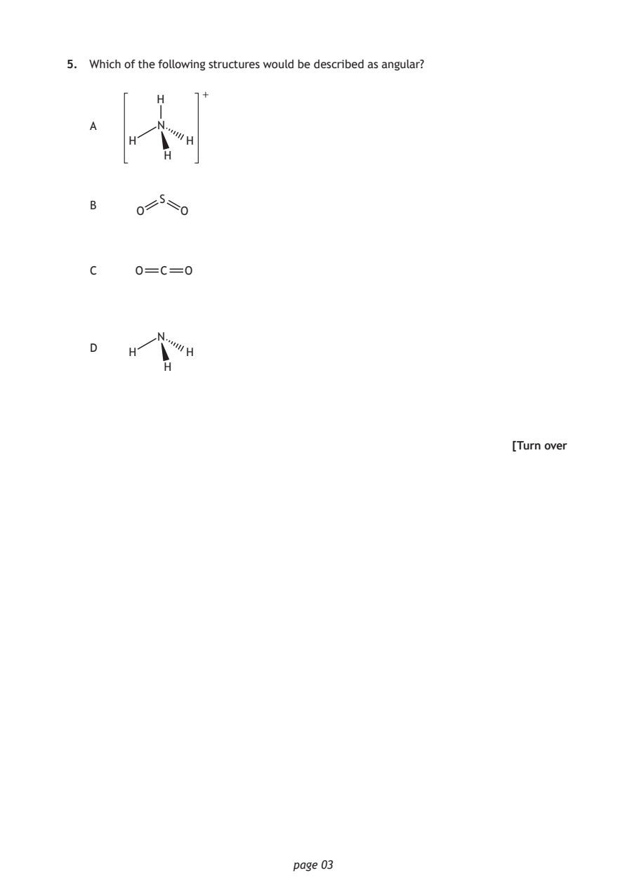
Selectable page text
5. Which of the following structures would be described as angular?
+
H
A N
H H
H
S
B
O O
C O C O
N
D
H H
H
[Turn over
page 03PDF page 4
Paper 1, Question 6Paper 1, Question 7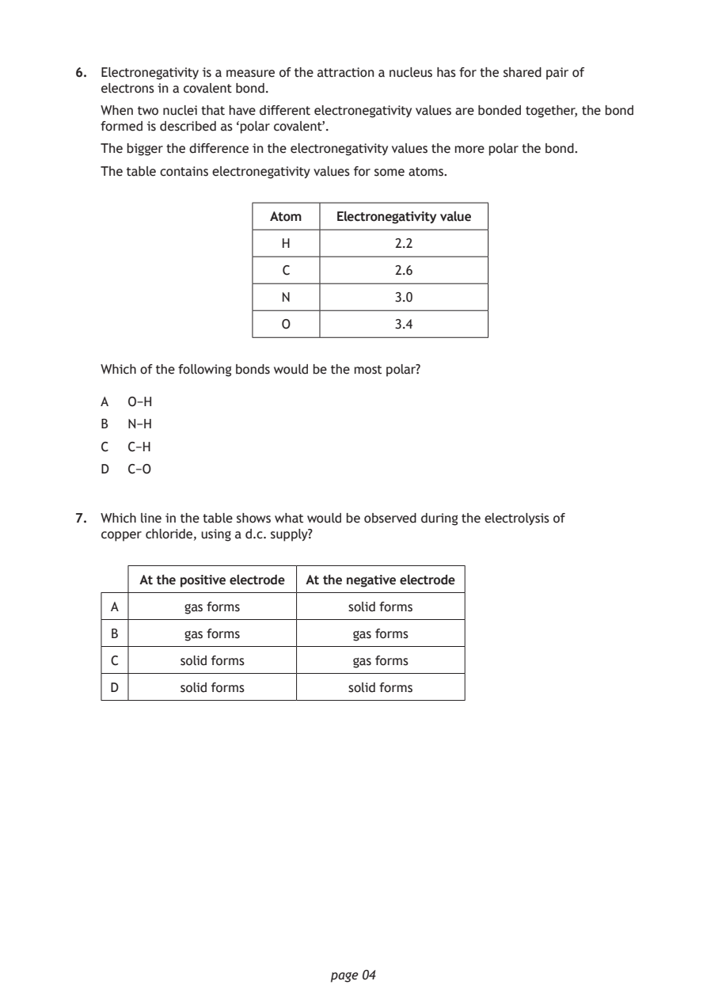
Selectable page text
6. Electronegativity is a measure of the attraction a nucleus has for the shared pair of
electrons in a covalent bond.
When two nuclei that have different electronegativity values are bonded together, the bond
formed is described as ‘polar covalent’.
The bigger the difference in the electronegativity values the more polar the bond.
The table contains electronegativity values for some atoms.
Atom Electronegativity value
H 2.2
C 2.6
N 3.0
O 3.4
Which of the following bonds would be the most polar?
A O−H
B N−H
C C−H
D C−O
7. Which line in the table shows what would be observed during the electrolysis of
copper chloride, using a d.c. supply?
At the positive electrode At the negative electrode
A gas forms solid forms
B gas forms gas forms
C solid forms gas forms
D solid forms solid forms
page 04PDF page 5
Paper 1, Question 8Paper 1, Question 9Paper 1, Question 10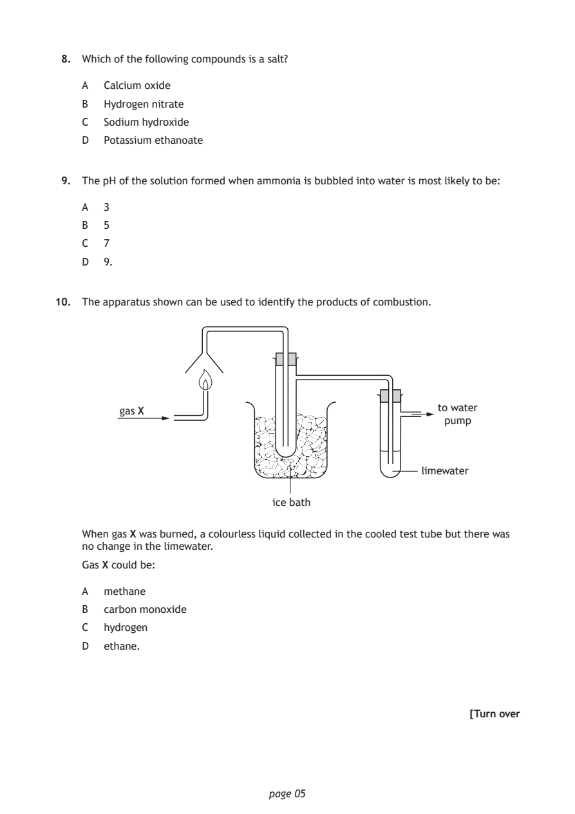
Selectable page text
8. Which of the following compounds is a salt?
A Calcium oxide
B Hydrogen nitrate
C Sodium hydroxide
D Potassium ethanoate
9. The pH of the solution formed when ammonia is bubbled into water is most likely to be:
A 3
B 5
C 7
D 9.
10. The apparatus shown can be used to identify the products of combustion.
to water
gas X
pump
limewater
ice bath
When gas X was burned, a colourless liquid collected in the cooled test tube but there was
no change in the limewater.
Gas X could be:
A methane
B carbon monoxide
C hydrogen
D ethane.
[Turn over
page 05PDF page 6
Paper 1, Question 11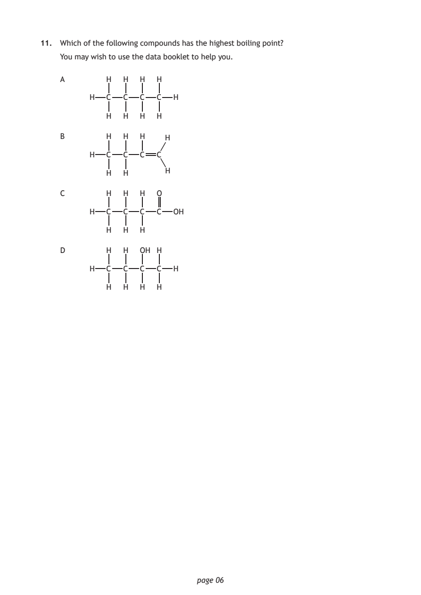
Selectable page text
11. Which of the following compounds has the highest boiling point?
You may wish to use the data booklet to help you.
A H H H H
H C C C C H
H H H H
B H H H H
H C C C C
H
H H
C H H H O
H C C C C OH
H H H
D H H OH H
H C C C C H
H H H H
page 06PDF page 7
Paper 1, Question 12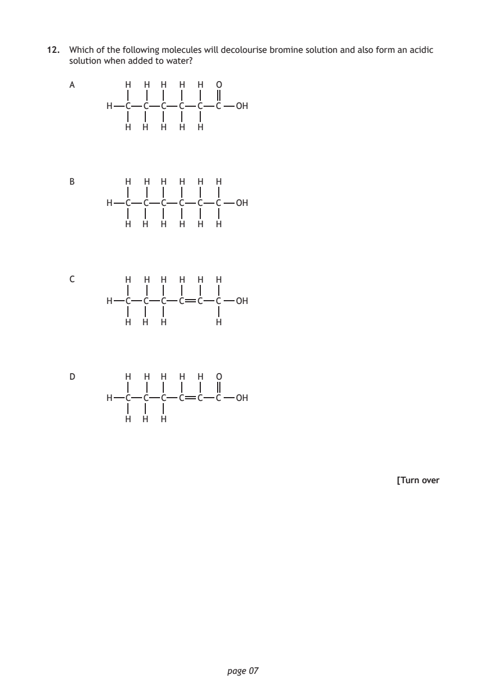
Selectable page text
12. Which of the following molecules will decolourise bromine solution and also form an acidic
solution when added to water?
A H H H H H O
H C C C C C C OH
H H H H H
B H H H H H H
H C C C C C C OH
H H H H H H
C H H H H H H
H C C C C C C OH
H H H H
D H H H H H O
H C C C C C C OH
H H H
[Turn over
page 07PDF page 8
Paper 1, Question 13Paper 1, Question 14Paper 1, Question 15Paper 1, Question 16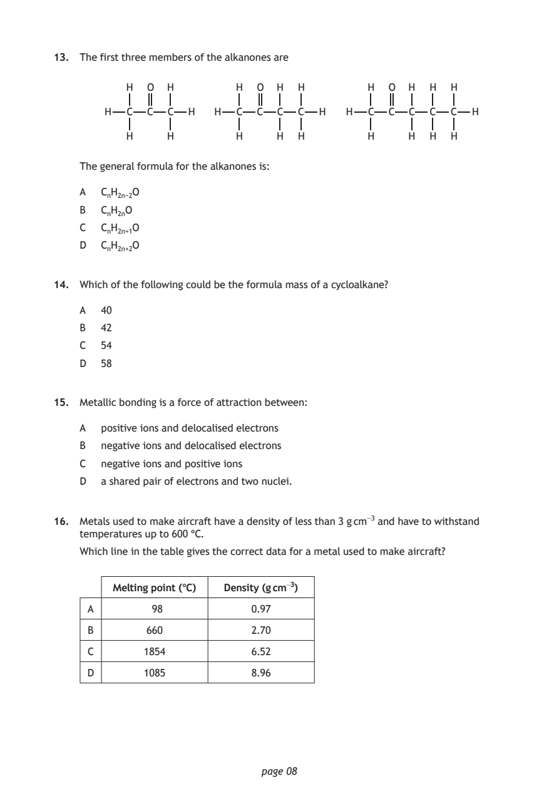
Selectable page text
13. The first three members of the alkanones are
H O H H O H H H O H H H
H C C C H H C C C C H H C C C C C H
H H H H H H H H H
The general formula for the alkanones is:
A CₙH₂ₙ₋₂O
B CₙH₂ₙO
C CₙH₂ₙ₊₁O
D CₙH₂ₙ₊₂O
14. Which of the following could be the formula mass of a cycloalkane?
A 40
B 42
C 54
D 58
15. Metallic bonding is a force of attraction between:
A positive ions and delocalised electrons
B negative ions and delocalised electrons
C negative ions and positive ions
D a shared pair of electrons and two nuclei.
16. Metals used to make aircraft have a density of less than 3 g cm⁻³ and have to withstand
temperatures up to 600 °C.
Which line in the table gives the correct data for a metal used to make aircraft?
Melting point (°C) Density (g cm⁻³)
A 98 0.97
B 660 2.70
C 1854 6.52
D 1085 8.96
page 08PDF page 9
Paper 1, Question 17Paper 1, Question 18Paper 1, Question 19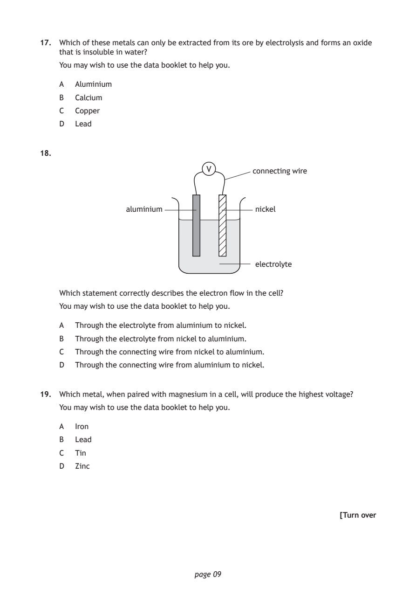
Selectable page text
17. Which of these metals can only be extracted from its ore by electrolysis and forms an oxide
that is insoluble in water?
You may wish to use the data booklet to help you.
A Aluminium
B Calcium
C Copper
D Lead
18.
V connecting wire
aluminium nickel
electrolyte
Which statement correctly describes the electron flow in the cell?
You may wish to use the data booklet to help you.
A Through the electrolyte from aluminium to nickel.
B Through the electrolyte from nickel to aluminium.
C Through the connecting wire from nickel to aluminium.
D Through the connecting wire from aluminium to nickel.
19. Which metal, when paired with magnesium in a cell, will produce the highest voltage?
You may wish to use the data booklet to help you.
A Iron
B Lead
C Tin
D Zinc
[Turn over
page 09PDF page 10
Paper 1, Question 20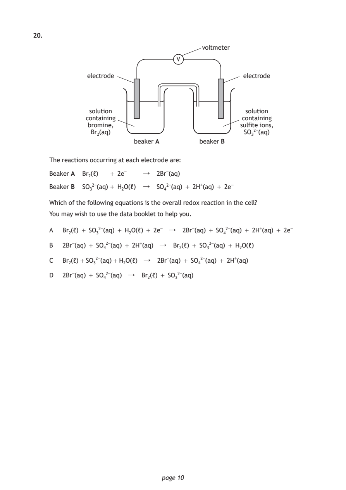
Selectable page text
20.
voltmeter
V
electrode electrode
solution solution
containing containing
bromine, sulfite ions,
Br₂(aq) SO₃²⁻(aq)
beaker A beaker B
The reactions occurring at each electrode are:
Beaker A Br₂(ℓ) + 2e⁻ ↓ 2Br⁻(aq)
Beaker B SO₃²⁻(aq) + H₂O(ℓ) ↓ SO₄²⁻(aq) + 2H⁺(aq) + 2e⁻
Which of the following equations is the overall redox reaction in the cell?
You may wish to use the data booklet to help you.
A Br₂(ℓ) + SO₃²⁻(aq) + H₂O(ℓ) + 2e⁻ ↓ 2Br⁻(aq) + SO₄²⁻(aq) + 2H⁺(aq) + 2e⁻
B 2Br⁻(aq) + SO₄²⁻(aq) + 2H⁺(aq) ↓ Br₂(ℓ) + SO₃²⁻(aq) + H₂O(ℓ)
C Br₂(ℓ) + SO₃²⁻(aq) + H₂O(ℓ) ↓ 2Br⁻(aq) + SO₄²⁻(aq) + 2H⁺(aq)
D 2Br⁻(aq) + SO₄²⁻(aq) ↓ Br₂(ℓ) + SO₃²⁻(aq)
page 10PDF page 11
Paper 1, Question 21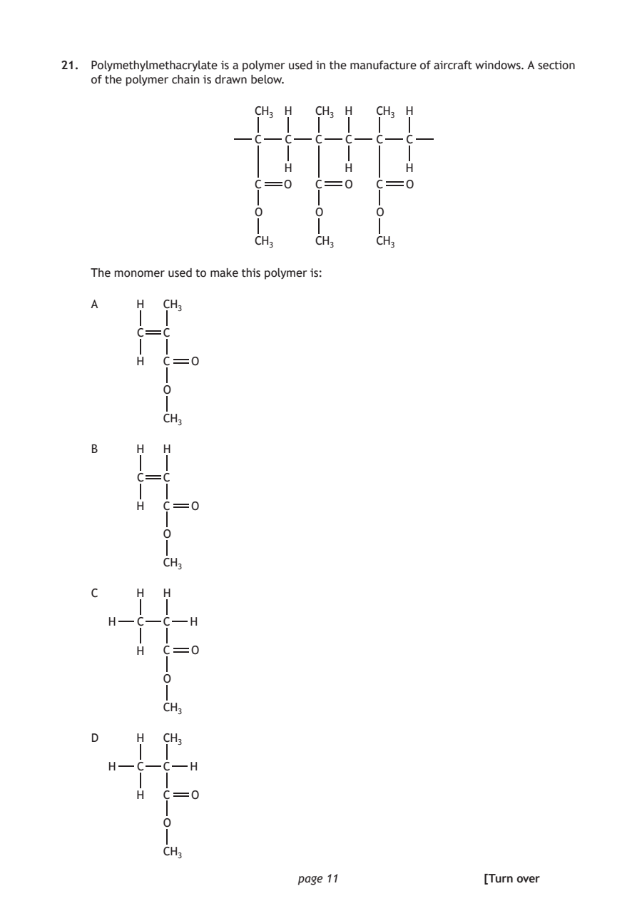
Selectable page text
21. Polymethylmethacrylate is a polymer used in the manufacture of aircraft windows. A section
of the polymer chain is drawn below.
CH₃ H CH₃ H CH₃ H
C C C C C C
H H H
C O C O C O
O O O
CH₃ CH₃ CH₃
The monomer used to make this polymer is:
A H CH₃
C C
H C O
O
CH₃
B H H
C C
H C O
O
CH₃
C H H
H C C H
H C O
O
CH₃
D H CH₃
H C C H
H C O
O
CH₃
page 11 [Turn overPDF page 12
Paper 1, Question 22Paper 1, Question 23Paper 1, Question 24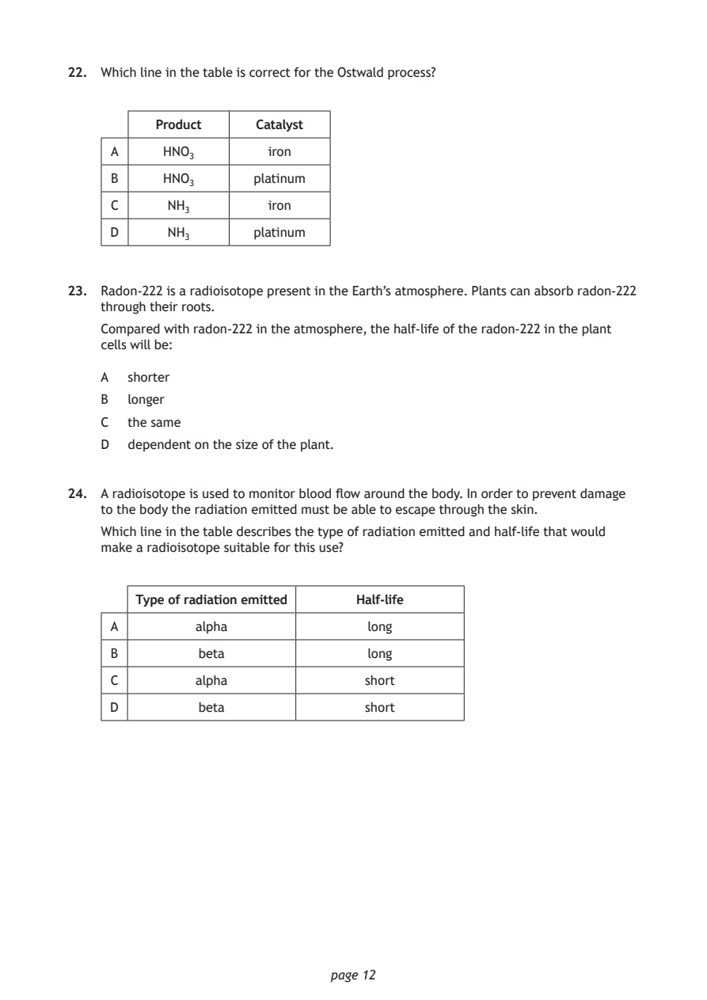
Selectable page text
22. Which line in the table is correct for the Ostwald process?
Product Catalyst
A HNO₃ iron
B HNO₃ platinum
C NH₃ iron
D NH₃ platinum
23. Radon-222 is a radioisotope present in the Earth’s atmosphere. Plants can absorb radon-222
through their roots.
Compared with radon-222 in the atmosphere, the half-life of the radon-222 in the plant
cells will be:
A shorter
B longer
C the same
D dependent on the size of the plant.
24. A radioisotope is used to monitor blood flow around the body. In order to prevent damage
to the body the radiation emitted must be able to escape through the skin.
Which line in the table describes the type of radiation emitted and half-life that would
make a radioisotope suitable for this use?
Type of radiation emitted Half-life
A alpha long
B beta long
C alpha short
D beta short
page 12PDF page 13
Paper 1, Question 25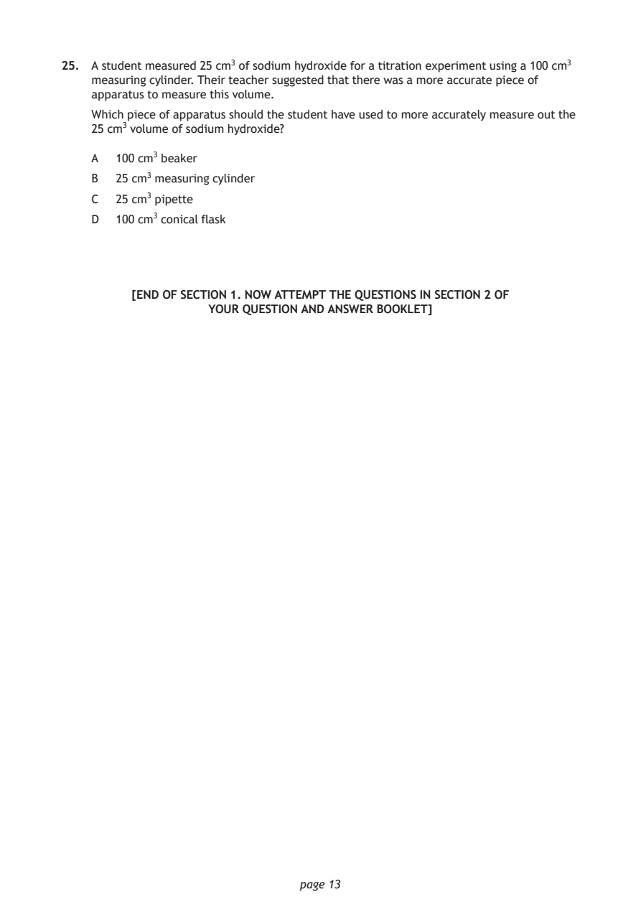
Selectable page text
25. A student measured 25 cm³ of sodium hydroxide for a titration experiment using a 100 cm³
measuring cylinder. Their teacher suggested that there was a more accurate piece of
apparatus to measure this volume.
Which piece of apparatus should the student have used to more accurately measure out the
25 cm³ volume of sodium hydroxide?
A 100 cm³ beaker
B 25 cm³ measuring cylinder
C 25 cm³ pipette
D 100 cm³ conical flask
[END OF SECTION 1. NOW ATTEMPT THE QUESTIONS IN SECTION 2 OF
YOUR QUESTION AND ANSWER BOOKLET]
page 13PDF page 14

Selectable page text
[BLANK PAGE]
DO NOT WRITE ON THIS PAGE
page 14PDF page 15

Selectable page text
[BLANK PAGE]
DO NOT WRITE ON THIS PAGE
page 15PDF page 16

Selectable page text
[BLANK PAGE]
DO NOT WRITE ON THIS PAGE
page 16